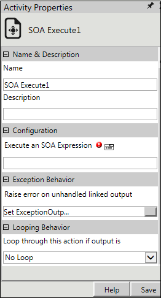

SOA Execute is the SOA activity supported by AVEVA Work Tasks. This activity is used to execute an SOA registered method. You can use this activity to use SOA directly through expression editor. Based on the status, it returns successful or unsuccessful result.
Steps to use SOA Execute activity:
In the Integration Activities, select SOA Execute activity.
Drag and drop SOA Execute activity on the Process Designer window.
Right-click the SOA Execute property, and then select Activity Properties.

The main property is Execute an SOA Expression which brings up the Expression Editor and it returns successful or unsuccessful output.
Use Expression Editor to build the expression. Expression Editor comes with a new node text which shows all the available methods or properties. Members of the each instance can be used to build the expression in the Expression builder. (See Figure 3).